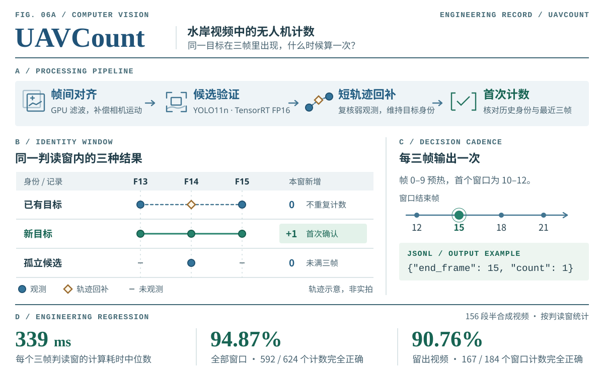

ENGINEERING RECORD
/
06
Computer vision
UAVCount.
在水岸倒影中数清目标
水面倒影和短时漏检会干扰逐帧检测。把候选放回连续帧与短轨迹中检查，再决定是否计数。
FIG. 06A
三帧观测与首次计数


01
/
READING NOTES
怎样区分一次检测和一次计数？
-
先对齐帧
将相邻帧对齐，减轻相机运动对候选位置比较的影响。
-
维护短轨迹
对检测候选进行验证；短时漏检时用轨迹回补，避免把每帧结果孤立看待。
-
按目标首次出现计数
用连续三帧观测确认目标，区分新的目标与仍在观测的已有目标。
02
/
REFERENCE
计数判据
前 10 帧用于预热，随后每隔三帧判读一次。连续三帧确认的是同一新目标，而不是三次计数。
| 判读对象 | 判断依据 | 用途 |
|---|---|---|
| 单帧候选 | 检测与候选验证 | 保留待跟踪目标 |
| 短轨迹 | 跨帧关联与回补 | 维持目标身份 |
| 计数事件 | 连续观测、首次出现 | 同一目标只计一次 |